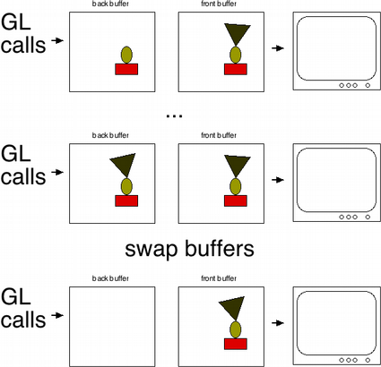

The Problem
Computers typically operate in sequential way by breaking large tasks into smaller ones. In this way, computers will perform one task at a time, one after another. Modern computers are so fast that the human eye cannot perceive each step, namely in image processing.
However, in the world of video games, the computer must render graphics in real time, and update each image every frame. Since computers perform one task at a time, running video games in this way runs into a problem. Graphics are constantly being rendered while the game runs. The intention of this design pattern is to display every pixel at the same time, instead of one pixel at a time.
How Does Double Buffering Work?
Video games use 2 framebuffers, instead of 1. The first framebuffer shows the player the current image, meanwhile, the next image is written to the second buffer. By instantly swapping buffers, the player sees a seamless transition to the next frame. It is a constant cycle of showing the player one buffer, writing to the next buffer, swapping buffers, writing to then next buffer, and repeat.
When to Use It
It is appropriate to use this method when all of these criteria are true:
- We have some state that is being modified incrementally.
- That same state may be accessed in the middle of modification.
- We want to prevent the code that’s accessing the state from seeing the work in progress.
- We want to be able to read the state and we don’t want to have to wait while it’s being written.